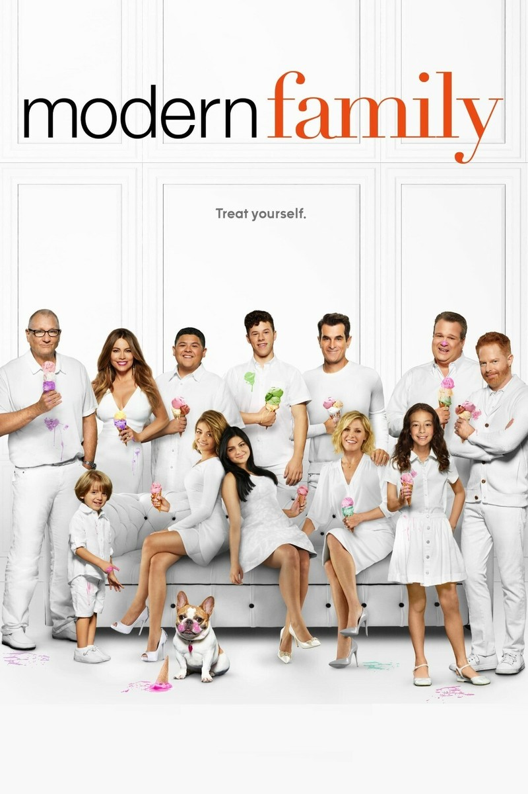

**Modern Family** är en av mina absoluta favoritserier, som jag varmt rekommenderar. Serien är en "mockumentary" som följer tre sammanlänkade, men mycket olika, familjer i Los Angeles. Vi får lära känna Pritchett-Dunphy-Tucker-klanen, ledd av patriarken Jay Pritchett.
Det briljanta med serien är hur den på ett roligt och charmigt sätt skildrar utmaningarna i den moderna familjen, oavsett om det handlar om ett traditionellt hushåll, en homosexuell förälder eller en stor åldersskillnad i ett äktenskap. Varje avsnitt är fullt av skarp dialog, värme och hjärta.
Serien lyckas balansera humor med känslosamma ögonblick, och man fäster sig snabbt vid karaktärer som den lätt klantige Phil Dunphy, den ordningsamma Claire, och de dynamiska Mitch och Cam. Se den om du vill ha många skratt och en påminnelse om vad familjen verkligen betyder!